Two free desktop apps by Scott, N8VCL, for amateur radio operators who run roll-call nets and pass National Traffic System radiograms. Both work without an internet connection, and your logs stay on your own computer.
STATUS QRVWIN · LINUX · ANDROIDDATA: LOCALUPDATES: SIGNED
The two programs
Pick the tool for the job at the mic
Net Roster Logger is for the net control station. It runs the roll call, collects check-ins and builds the net report. NTS Traffic Logger is for the traffic handler. It sorts the radiograms you copy and records every relay and delivery.
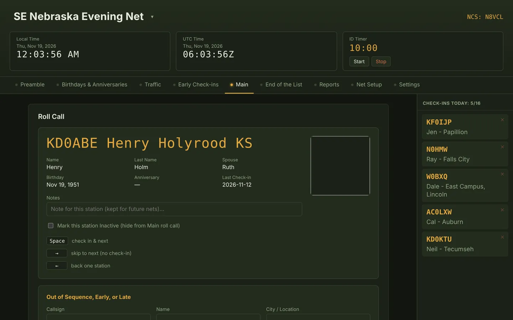
NET CONTROL · v1.49.3N8VCL Net Roster Logger
Run a roster-based roll-call net from one screen. Check stations in with the space bar, log traffic, and see birthdays and anniversaries. Reports are ready for the net manager when you secure the net.
Roll call card sorted by callsign suffix, with keyboard and touch shortcuts
Several nets in one app, each with its own roster and history
Traffic Net mode with NTS area and region groups, plus a traffic board
QRZ and FCC lookups, weather tiles, and sharing with a tablet
Paste in the messages you copied and the app sorts them into Deliver and Relay-by-state. It groups matching messages into books and logs every message you receive, originate, relay or deliver, with UTC times.
Reads radiograms in any layout, even run together on one line or in book form
Flags check mismatches, split addresses and duplicates before you add them
One-click relays while you're on the air, with Undo
Reports counted like the ARRL Station Activity Report, with BPL progress
Both apps run a whole net or traffic session with the network down. The internet is only used for optional lookups and update checks.
Your data
Stored on your computer
Rosters, logs and settings live in files in the app's own data folder. There's no account and no server copy.
Safety net
Automatic snapshots
Each app keeps a copy from before each day's changes for the last 7 active days. Any restore can be undone.
Updates
One click, verified
The app checks for a new version at startup and installs it for you, but only after checking the project's signing key.
Net control software
N8VCL Net Roster Logger
A self-contained app for a net control station running a roll-call net. Track who checks in, log traffic (QTC), call out birthdays and anniversaries, and keep the roster current, all from one screen.
The tabs are laid out in the order a net runs. Read the preamble, call the occasions, take early and traffic check-ins, run the roster, then catch the late stations.
PreambleRead your opening script, exactly as you saved it.
BirthdaysToday's birthdays and anniversaries, with "75th Birthday" counts.
TrafficLog QTC by callsign, destination and quantity.
EarlyMobiles, portables and low-power stations first.
MainThe roll call. Space checks in and moves to the next station.
End of ListLate, missed or new stations.
ReportsNet report, monthly totals and stale stations.
Features
Everything net control needs at hand
Roll call in large type
One station at a time, sorted by suffix, read the way you'd call it: KD0ABE Henry Holyrood KS. Stations already checked in are skipped automatically.
Keyboard and touch
Space checks in, → skips, ← goes back. On a tablet: double-tap, swipe left and swipe right.
Find stations fast
Type a full callsign, just the suffix, or part of a name or town. A station that isn't on the roster can be added and checked in at once.
Notes that stick
"New grandson," "away until November." A station's note shows on its card at every net until you clear it.
QRZ and FCC lookups
Photos, names, addresses and license class and expiration. A banner warns you when a station's license is about to expire.
Traffic Net mode
A simpler screen for formal traffic, with NTS area and region groups, a net session timer (QNI, QTC, QTR) and a traffic board.
Reports to the net manager
A monthly net report you can export as CSV or email to the net manager. The Net Manager's Summary combines every NCS's report.
Weather and ID timer
Weather Underground or NWS tiles in the header, and a 10-minute ID timer that reminds you to identify.
Share with a tablet
Run the same net from a phone, tablet or laptop on your network or over Tailscale, in a browser or the Android app.
Screenshots
A look around
Main. The roll-call card, with the Check-ins Today panel on the right.
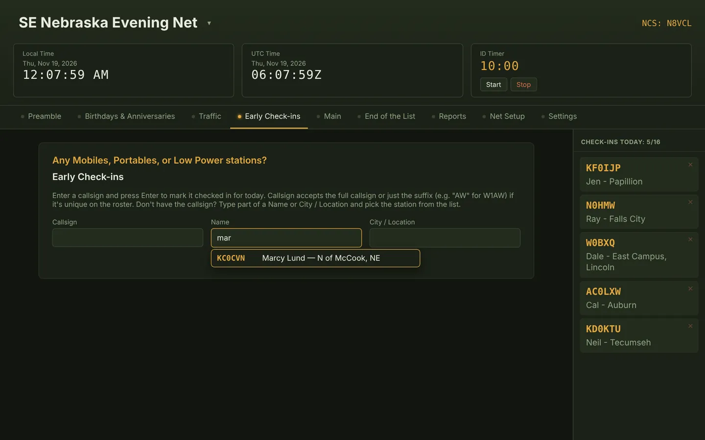
Early Check-ins. Typing part of a name brings up matching stations.
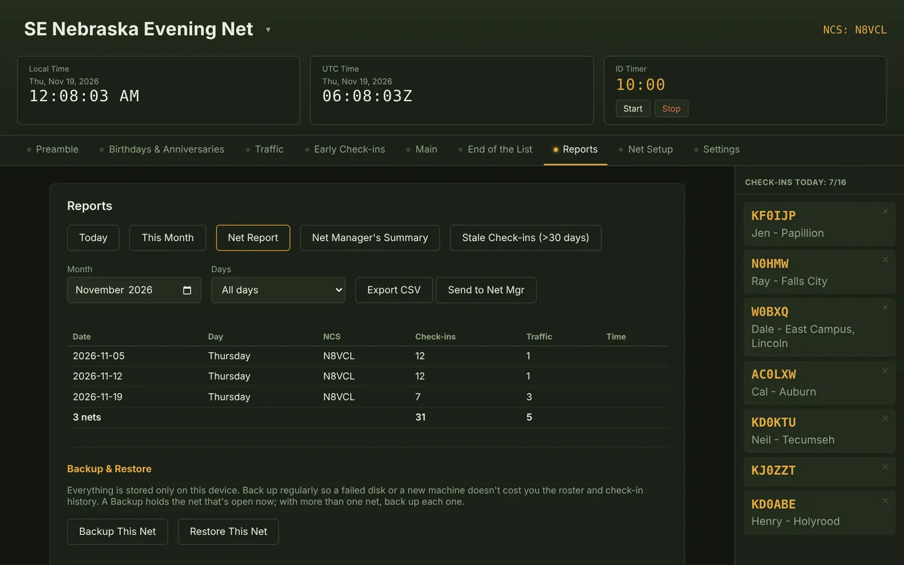
Net Report. One row per session, ready to export or email.
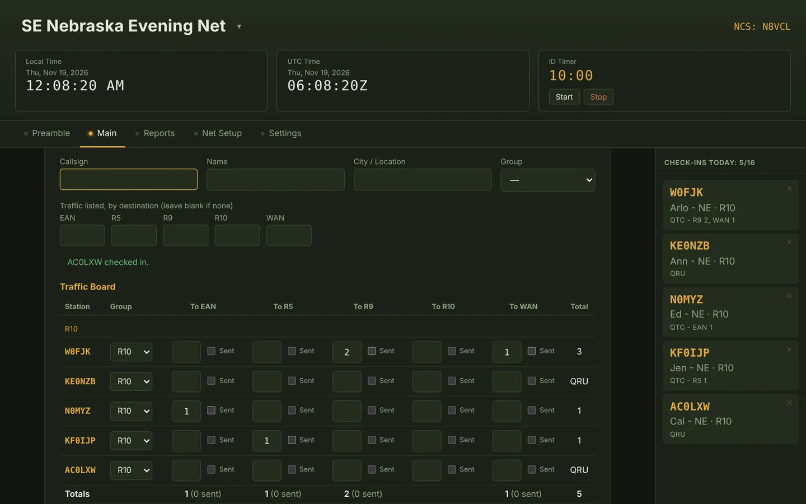
Traffic Board. Traffic listed to each area and region, ticked off as it's sent.
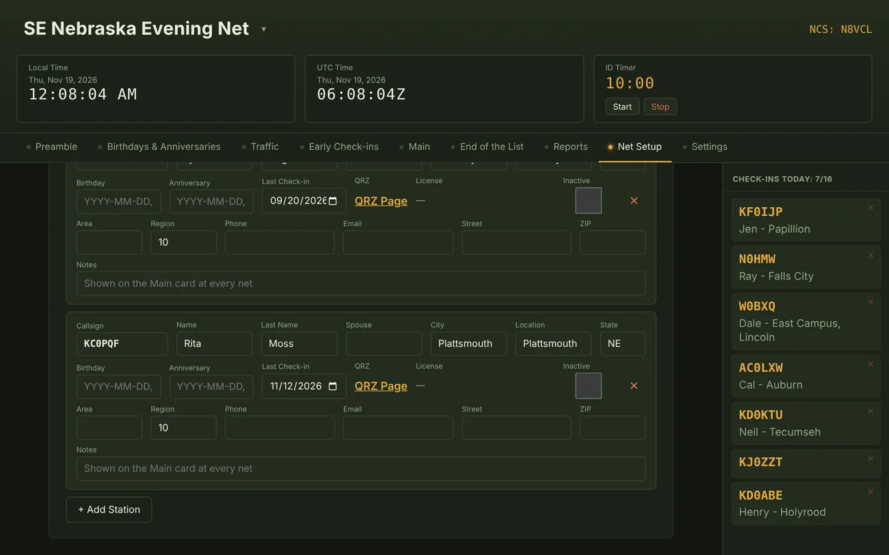
Roster. Every station's details, with CSV import and export.
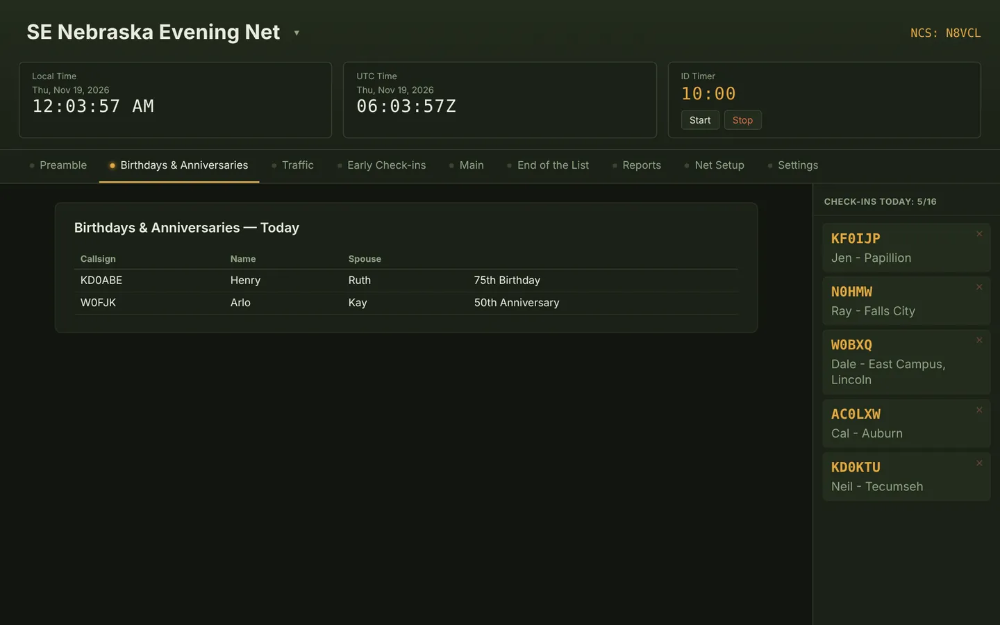
Birthdays & Anniversaries. Today's occasions, with the years counted.
Five color themes
Default, High Visibility, Light, Blue and Terminal. Pick one in Settings → Display.
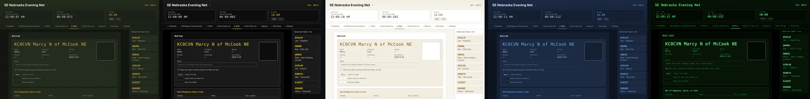
From left: Default, High Visibility, Light, Blue, Terminal.
Download
Get Net Roster Logger
Every release is on GitHub. Download the package for your system, install it, and the app keeps itself up to date from then on.
A desktop logbook for NTS traffic handlers. Paste in a jumbled list of radiograms and it sorts them by destination, gathers matching messages into books, and tracks every message from the moment you receive it until it's relayed or delivered.
Illustrated, step-by-step guides to installing, setting up and using each program. The screenshots use made-up example stations, so the names and callsigns are for illustration only.
Net Roster Logger runs a roll-call net from one window. It tracks check-ins, logs traffic, flags birthdays and anniversaries, and keeps your roster current. It needs no internet connection during a net, and everything is stored on your computer.
01Installation
All versions are published on the project's GitHub Releases page. Open the newest release, look under Assets, and download the file for your system.
System
File to download
Notes
Windows
…_x64-setup.exe or …_x64_en-US.msi
Either works. The .exe is the simpler choice.
Debian, Ubuntu, Mint
…_amd64.deb
Installs like any other package.
Fedora, openSUSE
….x86_64.rpm
Installs like any other package.
Any Linux
…_amd64.AppImage
Nothing to install. Make it executable and run it.
Android, Fire tablet
.apk
Works on your main computer's nets through Sharing.
Windows
Run the installerDouble-click the setup.exe (or .msi) you downloaded.
Get past the SmartScreen warningWindows says it protected your PC because the installer isn't signed with a paid Microsoft certificate. Click More info, then Run anyway. The app installs and works normally.
Finish and launchFollow the installer, then open N8VCL Net Roster Logger from the Start menu.
The warning appears because signing an installer costs money each year. It doesn't mean anything is wrong with the file. Download only from the GitHub Releases page linked above.
Linux
.deb or .rpmOpen the file with your software installer, or install it from a terminal. You'll be asked for your password, as with any package install.
sudo apt install "./N8VCL Net Roster Logger_1.49.3_amd64.deb"
AppImageMake the file executable, then run it. In most file managers you can do this under Properties → Permissions, or from a terminal:
chmod +x "N8VCL Net Roster Logger_1.49.3_amd64.AppImage"
./"N8VCL Net Roster Logger_1.49.3_amd64.AppImage"
Android (phones, tablets, Amazon Fire)
Download the .apk on the deviceOpen the Releases page in the device's browser and tap the .apk.
Allow the installOpen the downloaded file. When Android asks, allow your browser or file app to install apps, then tap Install.
Connect to your main computerThe Android app doesn't keep nets of its own. It opens on Connect to Your Main Computer. See Sharing with a tablet.
Updates
From version 1.41.0 on, the app checks for a newer version each time it starts. When one is available, a bar at the top offers three buttons:
Install Update downloads the new version, installs it and restarts the app. The download is checked against the project's signing key first, so only genuine releases are accepted.
What's New shows what changed in that version.
Later puts it off until the next start.
On Windows you'll see the installer's progress window. Linux .deb and .rpm installs ask for your password, and the AppImage updates itself in place. On Android, Android's own installer opens, so tap Install or Update. You can also check any time with Check for Updates in Settings. If you have 1.40.0 or earlier, install a newer version by hand once.
02First-time setup
Setup takes a few minutes and is done once. The roster, preamble and net details stay saved until you change them.
Open Net SetupClick the Net Setup tab, between Reports and Settings. A new install starts with one net named "Net Name."
Fill in Net InfoEnter the Net Name and your NCS Callsign. If you'll email monthly reports, also enter the Net Manager and Net Mgr Email.
Type your preamblePaste or type the opening script into Preamble Script. It will appear on the Preamble tab exactly as written.
Build the rosterUnder Roster, click + Add Station for each station, or bring in a whole list with Import Roster CSV.
Set your preferencesIn Settings, choose a color theme, a 12- or 24-hour clock, and whether to show the ID timer. Optionally add weather, a QRZ login and email.
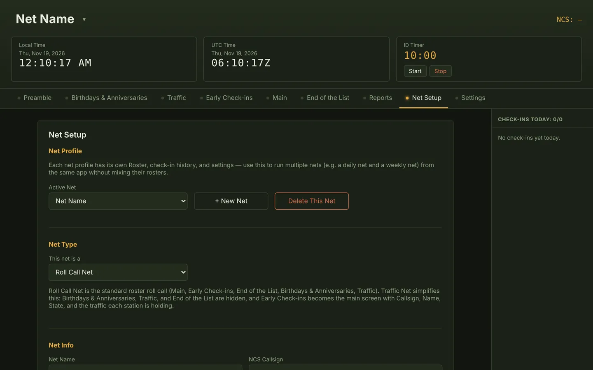
A new install. Net Setup with the default "Net Name."
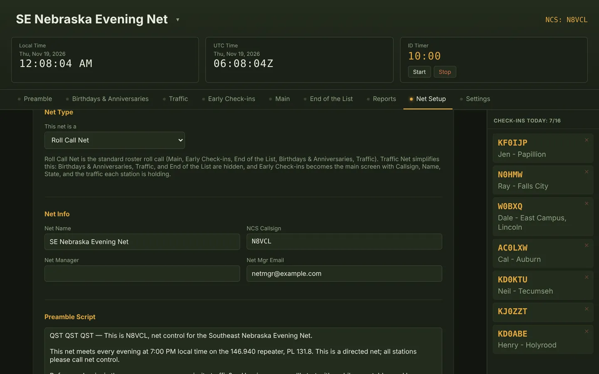
Net Info filled in, with the Preamble Script below it.
Importing a roster: the CSV can have its columns in any order, and the column names aren't case-sensitive. Recognized columns are Callsign, Name, Last Name, Spouse, City, Location, State, URL, Birthday, Anniversary, Last Check-in, Inactive, Area, Region, Phone, Email, Street, ZIP and Notes. Rows that match an existing callsign update that station.
03The main screen
The header, the tabs, the roll-call card, and the Check-ins Today panel on the right.
Net Name (top left) is a dropdown for switching between your nets.
Local Time and UTC Time show the date and time, updated every second.
ID Timer counts down from 10:00. When it reaches zero, a beep and a "Time to ID" pop-up remind you to identify and ask for waiting traffic. Click OK to start it again.
Weather tiles (installed app only) show temperature, humidity, wind, pressure and more from the station you choose.
Check-ins Today lists every station checked in today, with a count such as 5/16. Click ✕ on an entry to undo a mistaken check-in. Drag the panel's left edge to resize it.
On a small screen (a phone, tablet or narrow window), the header shrinks to one row and the tabs become a row you swipe sideways.
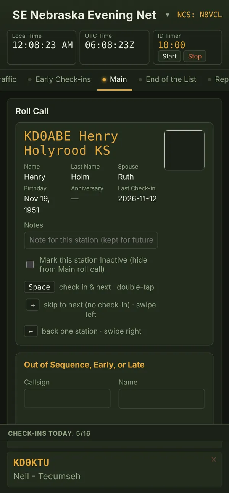
The compact layout on a phone.
04Running a net
The tabs run left to right in the order of a typical net. Click Preamble and read it, then Birthdays & Anniversaries to call those out. Ask for traffic on the Traffic tab and for short-time stations on Early Check-ins. Run the roll call on Main, and catch everyone else on End of the List.
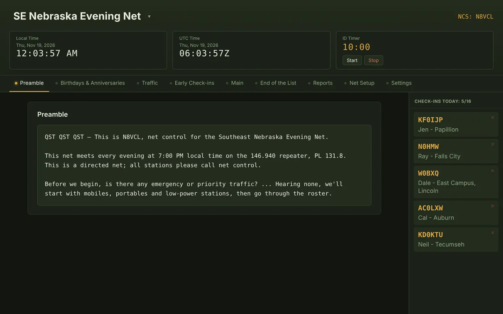
Preamble. Your script, read-only. Edit it in Net Setup.Birthdays & Anniversaries. Shows "75th Birthday" when the year is known.
Birthdays and anniversaries can be a full date (1984-03-22) or just the month and day (3/22). A year by itself (1984) is kept on file but never matches a day.
Roll call (Main)
Main shows one station at a time, sorted by suffix, which is the letters after the number. For example, W1AW sorts under "AW". The top line reads the way you'd call the station: callsign, name, location and state.
Key
Touch
What it does
Space
Double-tap
Check the station in and move to the next one
→
Swipe left
Skip to the next station without checking in
←
Swipe right
Go back one station, to catch a missed or misheard call
Stations already checked in today are skipped. Each new day the roll call starts again from the top of the roster.
Notes stay with the station and show at every net until you change them. Click into the Notes box to type, then click outside it before using Space or the arrows again. Inactive hides a station from the roll call. The station comes back by itself the next time it checks in from any tab.
When you reach the end of the roster, the app switches to End of the List automatically.
A station whose license expires within 10 days gets a yellow banner above its callsign, and an expired license gets a red one. This needs a QRZ or FCC lookup on file. See lookups.
Early and late check-ins
Early Check-ins, End of the List and the Out of Sequence, Early, or Late box under the Main card all work the same way. Type a Callsign and press Enter.
A suffix alone (AW) is enough if only one station on the roster has it.
Don't have the callsign? Type part of a Name or a City / Location. Matching stations drop down, and those already checked in today are marked ✓ checked in. Click one, or use ↓↑ and Enter.
Anyone checked in this way is skipped when the roll call reaches them.
Typing mar in Name finds Marcy, KC0CVN, from N of McCook.
Stations not on the roster
An unknown callsign opens the Not on the Roster prompt. With a QRZ login saved, the station's name and city are looked up while the prompt is open. If QRZ doesn't know the call, that's a good hint you've made a typo.
Add to roster and check in (the default, Enter) adds the station with its looked-up details.
Just check in for now logs it today without adding it to the roster.
Re-Enter Callsign (or Esc) lets you fix the callsign.
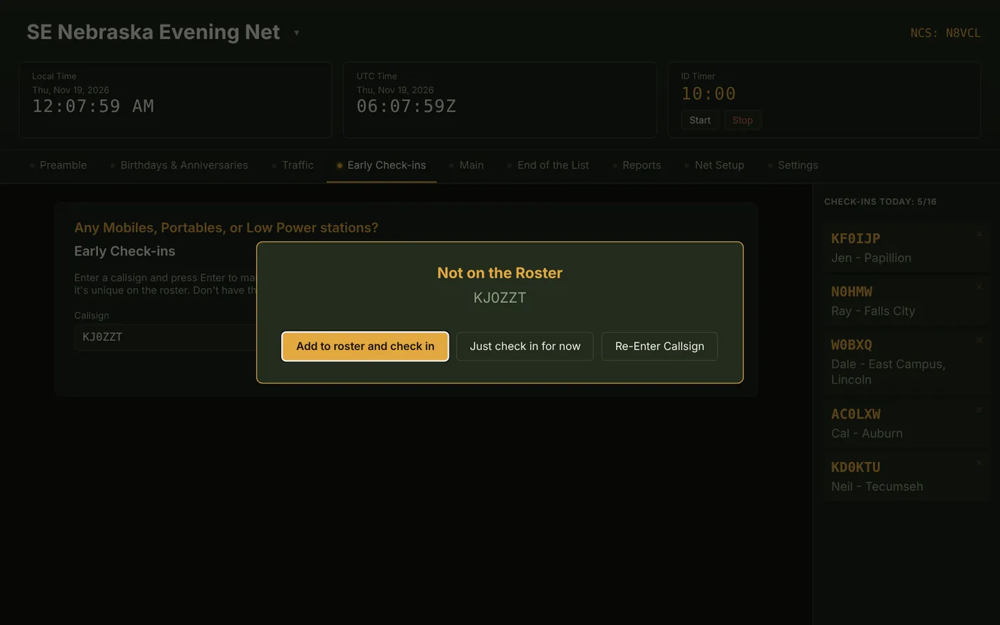
The Not on the Roster prompt.
Logging traffic
On the Traffic tab, fill in a row: Callsign, Destination, Qty and Sent?. Then press Enter or Tab to start a new row. Setting Sent? to Yes adds to today's QTC count, and setting it back takes it away again.
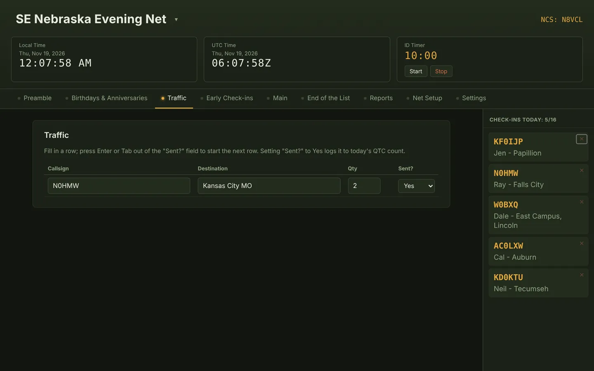
A traffic row for Kansas City, MO, marked sent.
05The roster
The roster is at the bottom of Net Setup. Each net has its own. Every station is a card with its callsign, names, city, location, state, dates, a QRZ Page link, an Inactive checkbox, Area, Region, contact details and Notes. The counts at the top read like | Active: 38 | Inactive: 4 | Total: 42 |.
Location is how the net refers to a station, such as "East Campus, Lincoln" or "N of McCook." It's what the Main card shows, and lookups never change it. Callsigns are converted to uppercase as you type, and a slashed zero (Ø) becomes a real 0.
Export Roster CSV saves the roster in the same format Import accepts.
Roster cards, with + Add Station at the bottom.
QRZ and FCC lookups
With a QRZ login saved, lookups go to QRZ.com. Photos need an active QRZ XML Logbook Data subscription.
Without one, or for a callsign QRZ doesn't know, US calls are looked up in the FCC license database through callook.info or HamDB.org. These lookups return the name, address, license class and expiration, but no photo or email.
Look Up on a card looks up one station. Fetch Missing works through every station that hasn't been looked up, pausing between each one. Names and email you've typed are never overwritten.
New stations added from a check-in prompt are looked up automatically. Photos are saved on the computer, so they still show during a net with no internet.
06Reports
Today: today's check-ins and QTC.
This Month: total check-ins, QTC and net sessions this month.
Net Report: one row per session for a chosen month, with a totals row. Filter by weekday with Days. Export CSV saves it, and Send to Net Mgr emails it (this needs Email set up first).
Net Manager's Summary: combines every NCS's exported Net Report into one monthly summary with Sessions, QNI, QTC and AVG.
Stale Check-ins (>30 days): stations that haven't checked in for a month. Remove them, or use Mark All Listed Inactive to hide them until they're heard again.
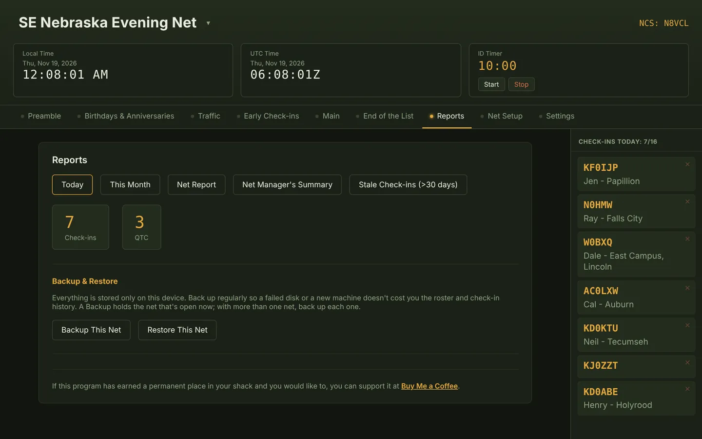
Today.Net Report for the month.
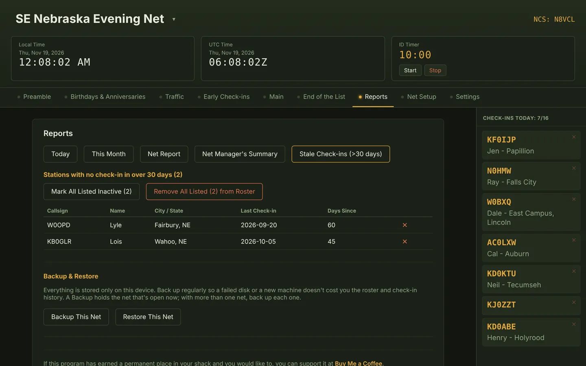
Stale Check-ins, most overdue first.
07Traffic Net mode
For nets whose purpose is passing formal traffic rather than calling a roster. In Net Setup → Net Type, choose Traffic Net. The setting applies to that net only, and switching back loses nothing.
Only Preamble, Main, Reports, Net Setup and Settings are shown. Main becomes a check-in form with traffic fields.
The Net Session box records Start Net and Secure Net times and keeps a running count of QNI, QTC and QTR.
Traffic Groups sort stations into areas, regions or states. Use NTS Central Area preset adds EAN, R5, R9, R10 and WAN in one click. The most specific match wins: State, then Region, then Area.
The Traffic Board shows the traffic listed to each group. Tick Sent once traffic is passed. Only sent traffic counts as QTC.
Reports → Today adds a one-line net report, ready to copy and send.
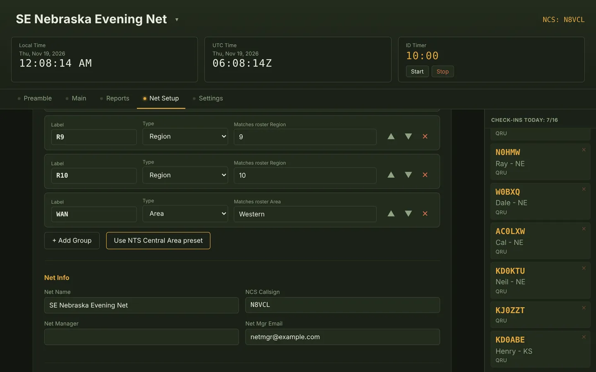
Traffic Groups after Use NTS Central Area preset.
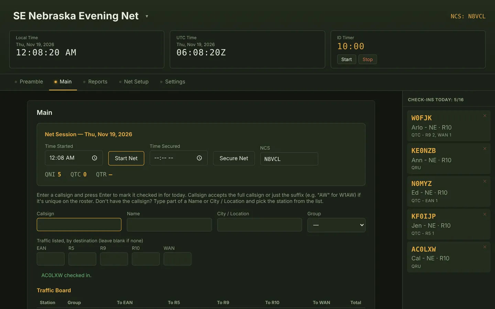
Main on a Traffic Net, with the Net Session box.The Traffic Board and its totals.
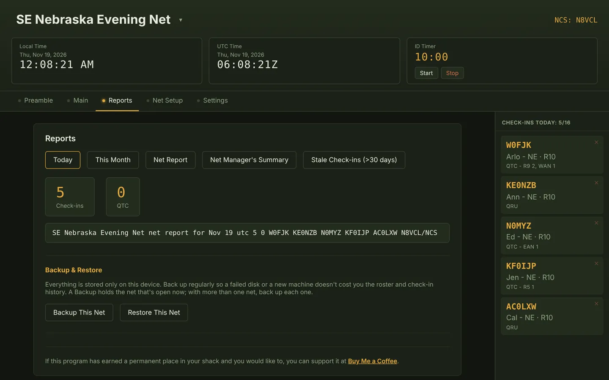
The one-line report: <Net> net report for <date> utc <QNI> <QTC> <calls…> <NCS>/NCS
08Settings
Display: color theme (Default, High Visibility, Light, Blue, Terminal), 12- or 24-hour local time, and the 10-minute ID timer.
Weather: choose a Weather Underground station (needs your WU API key) or a National Weather Service station such as KLNK or KOMA. Pick which tiles to show, and click Test.
File Locations: default folders for Backups and Roster exports.
QRZ.com Login: Save, then Test Login to confirm the XML subscription. The login is stored only on this computer and is never included in backups.
Email: pick Gmail, Yahoo, iCloud or Other, and enter your address and an app password. These services don't accept your normal password from apps. For Gmail, go to Google Account → Security → 2-Step Verification → App passwords.
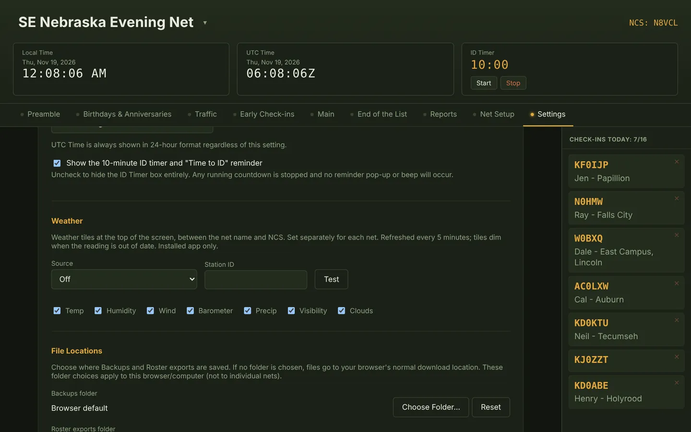
Weather settings.
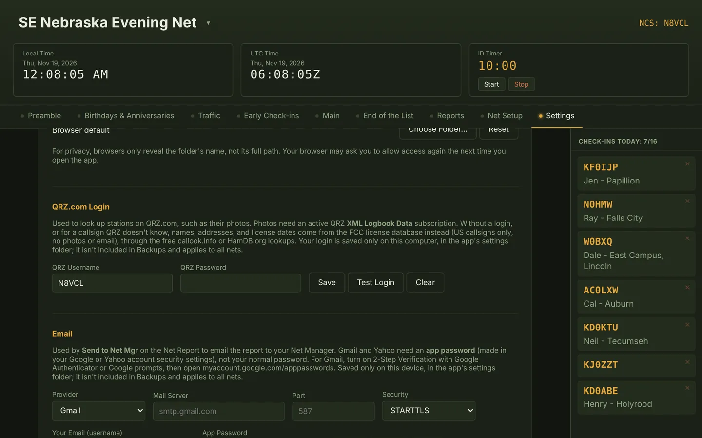
QRZ.com Login and Email.
The five themes: Default, High Visibility, Light, Blue, Terminal.
09Sharing with a tablet
Use your main computer's nets from a tablet, phone or laptop on the same network, or from anywhere over Tailscale. Changes show on every device within a couple of seconds, so you can switch devices partway through a net.
Turn on sharingOn the main computer, go to Settings → Sharing and tick Share this computer's nets. Note the address shown (for example http://192.168.1.20:7373) and the 6-digit pairing code. On Windows, allow the app through the firewall for Private networks.
Connect the other deviceOpen the address in any web browser, or enter it on the Android app's Connect to Your Main Computer screen. A desktop app can connect from its own Settings → Sharing.
Enter the pairing code onceAfter that, the device goes straight in. Keep the app open on the main computer while others are connected.
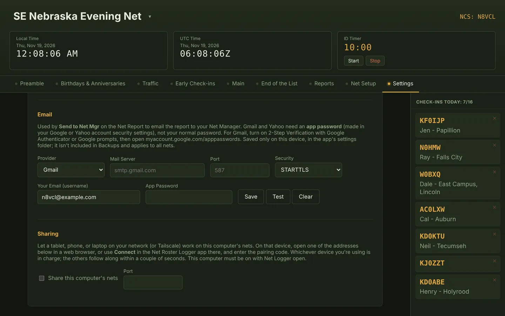
Sharing settings, below Email.
New Code makes a new pairing code, and every device will need to enter it again. Use it if someone you don't want on your nets has the code. After five wrong codes in a minute, that device is locked out for 5 minutes.
10Backups and safety
Everything is stored locally, with no cloud copy. Your data is yours, and keeping it safe is up to you.
Backup This Net (Reports tab) saves a dated JSON file named like [Net Name]-Backup-[date].json. Restore This Net loads one back in. Back up each net separately.
Automatic Snapshots: the installed app keeps a copy of each net from before each day's changes, for the last 7 days that net changed. A restore can be undone with Before the last restore.
Open Data Folder shows where your nets are kept. To move to a new computer, copy that folder.
A red bar across the top means changes aren't being saved. Make a backup right away.
Back up at least once a week, and right after every net. To have someone substitute for you, send them your backup file to restore. If they only need the current roster, send an Export Roster CSV instead.
11Troubleshooting
Problem
What to check
A station doesn't come up on Main
It may be marked Inactive in the roster, or it may have already checked in early today.
"Matches multiple callsigns"
The suffix fits more than one station. Type the full callsign.
A station shows as Unassigned on the Traffic Board
Its Area or Region doesn't match any Traffic Group. Fill it in on the roster, or check the group's "Matches roster" value.
Some tabs are missing
The net is set to Traffic Net. See Net Setup → Net Type.
An imported birthday never matches
A year by itself (1984) is stored as year-only on purpose. Use a full date or month/day.
A desktop logbook for NTS traffic handlers. It sorts the radiograms you copy by destination, gathers matching messages into books, and keeps track of every message you receive, originate, relay and deliver. It records who each message came from and went to, on what net, and when (UTC). Everything is stored on your own computer.
Download the newest release from the project's GitHub Releases page. Under Assets, pick the file for your system.
System
File to download
Windows
…_x64-setup.exe or …_x64_en-US.msi
Debian, Ubuntu, Mint
…_amd64.deb
Fedora, openSUSE
….x86_64.rpm
Any Linux
…_amd64.AppImage (make it executable and run it)
WindowsRun the installer. If SmartScreen says it protected your PC, click More info, then Run anyway. The installer isn't signed with a paid certificate, but the app works normally.
LinuxInstall the .deb or .rpm with your software installer, or run the AppImage:
Open the appIt opens on the Dashboard. It's empty until you set up your station.
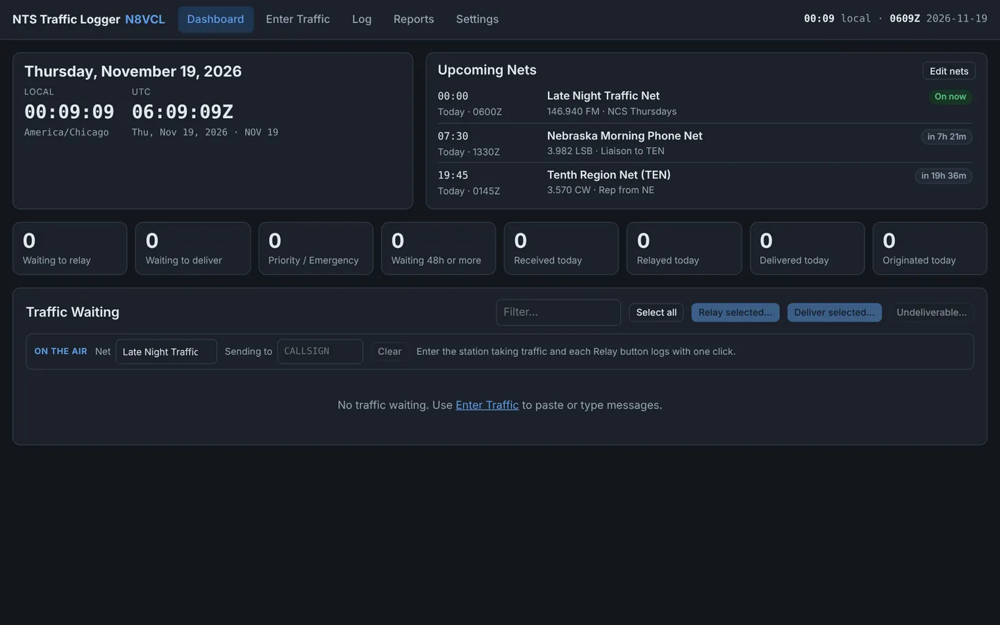
The Dashboard with your nets set up and no traffic yet.
02First-time setup
Open the Settings tab. There are three things to fill in before you enter any traffic.
My Station
Enter your callsign, name, and city and state, which are used as the place of origin. Also set the Next message number. Each message you originate takes that number, and it goes up by one each time.
My Delivery Area
List the ZIP codes or ZIP prefixes you deliver to (680, 681, 685) and/or the cities (OMAHA NE, LINCOLN NE). Traffic addressed inside this area is sorted under Deliver. Everything else goes under Relay, grouped by state. To override the sorting for a single message, edit it and use Sort under.
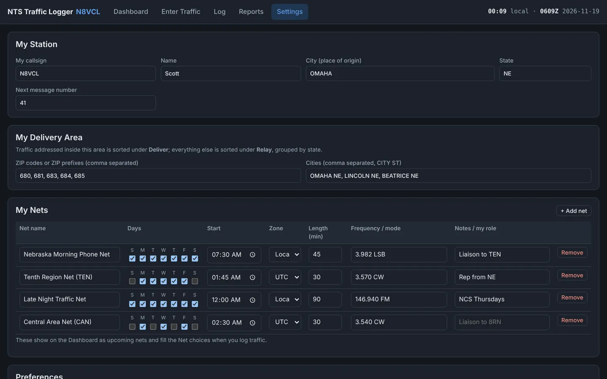
My Station and My Delivery Area.
My Nets
Click + Add net for each net you check into. Enter its name, days of the week, start time (local or UTC), length, frequency or mode, and a note such as "Liaison to TEN." These nets fill the Dashboard's Upcoming Nets and the Net choices when you log traffic.
My Nets, with both local and UTC start times.
Under Preferences, choose the theme (match system, light or dark), whether "today" and reports use local days or UTC days, the overdue limit in hours, and a 12- or 24-hour clock.
03Entering traffic
Paste a list of messages
Go to Enter Traffic and paste any number of radiograms into the box. They can be:
one field per line, the standard way;
run together on one line, such as NR 57 P W5RTA 11 TULSA OK 2210Z NOV 18 GARY HOLT … BT … BT ELLEN AR;
already in book form, starting with BOOK OF 3 … followed by the text and NR 101, NR 102 with their addresses;
any mix of these, in upper or lower case, with net chatter or headers in between.
Fill in Received from, Net and the UTC date/time, or choose I originated these. Then click Sort & preview.
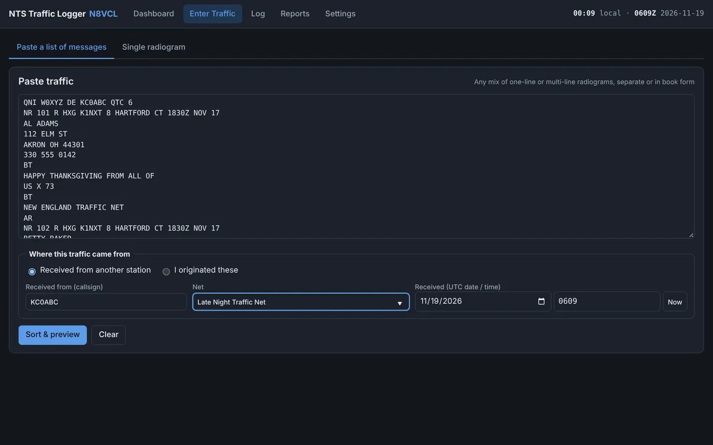
Messages pasted in, received from KC0ABC on the Late Night Traffic Net.
Sort & preview
The preview shows each message under its Deliver or Relay group, with its book letter. It flags anything worth checking:
a check that doesn't match the number of words in the text (the check is kept as received, and the counted value is shown next to it);
an address that came in on one line and was split automatically;
a message with only one BT, or none;
a message that's already in your log, which is unticked so it won't be added twice;
lines that weren't part of any message.
Click a row to correct it, untick anything you don't want, then click Add n to Waiting.
NR 57 is flagged twice: its address was split automatically, and its check of 11 doesn't match the 12 words counted.
04The Dashboard
The Dashboard after adding six messages.
Clocks: today's date, with local time and UTC.
Upcoming Nets for the next week, with local and UTC times and a countdown ("in 7h 21m", "On now").
Tiles: messages waiting to relay or deliver, Priority/Emergency waiting, messages waiting past your overdue limit, and today's received, relayed, delivered and originated counts.
Traffic Waiting: every open message, grouped as Deliver — my area, then Relay — OH, Relay — PA and so on. Within each group, messages are sorted by precedence (Emergency, Priority, Welfare, Routine), then ZIP.
Click any row to see the whole radiogram and its history. From there you can Copy, Edit or Delete it, or mark it Undeliverable.
NR 57 opened, with its check warning and history.
05Relaying and delivering
Click Relay or Deliver on a row.
Or tick several rows (or click Select on a book), then use Relay selected… or Deliver selected….
Or click Relay book… to log every message in a book at once.
A relay records the station you passed it to, the net, and the UTC date and time. A delivery records who it was delivered to, how (phone, email, in person, mail…), and the UTC time. Undeliverable… records the reason and the station you sent a service message to.
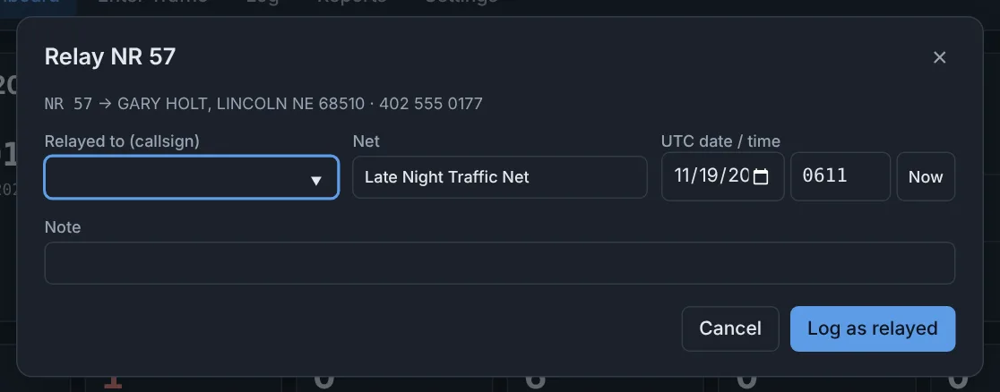
Relay. The net that's on now is filled in.
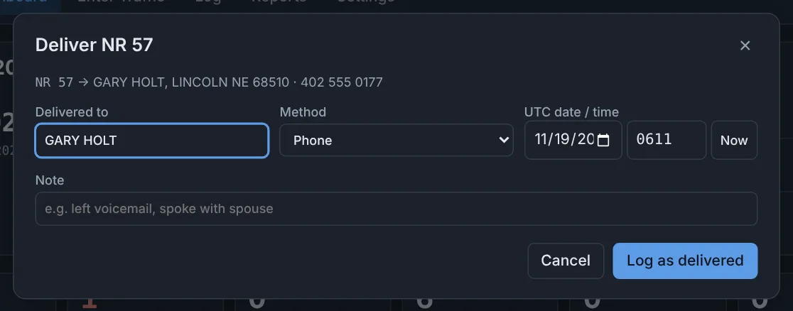
Deliver. Choose the delivery method.
The Relay window comes filled in with the net that's on now and the last station you relayed to in the past three hours, so Enter is usually all it needs.
One-click relays while you're on the air
Check the NetThe On the air bar fills in whichever of your nets is on now. Type over it for a net that isn't in your list.
Enter the receiving stationType the callsign in Sending to. The bar lights up and every button changes to Relay → W0QED.
Click to logOne click logs the relay to that station, on that net, at the current UTC time. The confirmation has an Undo button for about ten seconds.
Change stations or stopWhen another station takes traffic, type the new callsign. Clear turns one-click relaying off.
One-click relay to W0QED is on.
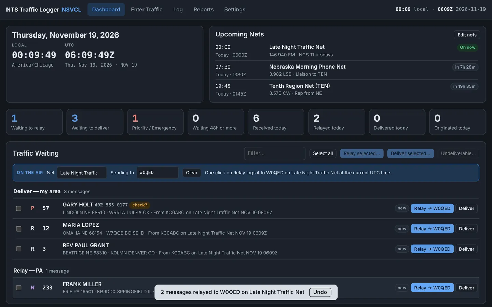
"2 messages relayed to W0QED," with Undo.
After the Undo button disappears, open the message from the Log and use Return to waiting.
06Books
Messages in the same group with the same check, place of origin, text and signature are shown together as a BOOK OF n. Their precedence, HX, station of origin, time and date may differ. Whatever is the same for all of them goes in the book's header, and whatever differs goes on each message's own NR line. Copy as book puts the book on the clipboard, ready to read or send:
BOOK OF 2 R 8 HARTFORD CT
BT
HAPPY THANKSGIVING FROM ALL OF
US X 73
BT
NEW ENGLAND TRAFFIC NET
NR 101 K1NXT NOV 10
AL ADAMS
AKRON OH 44301
NR 57 KN1OBI NOV 12
BETTY BAKER
CANTON OH 44702
AR
Here the two messages came from different stations on different dates, so each NR line carries its own station and date. When the whole preamble matches, the NR line is just the number.
A BOOK OF 2 under Relay — OH, with Copy as book, Select and Relay book.
07Originating a message
Use Enter Traffic → Single radiogram for one message, with fields for the preamble, address, text, signature and op note.
The check is counted as you type the text, and ARL is added when ARL numbered texts are used. If you type over it with a value that doesn't match, a warning offers Use to put the counted value back.
Choose I originated this message and the number, station of origin, place, time filed and date are filled in for you.
Click Save to Waiting, or Save & log relayed… or Save & log delivered… if you've already passed it on.
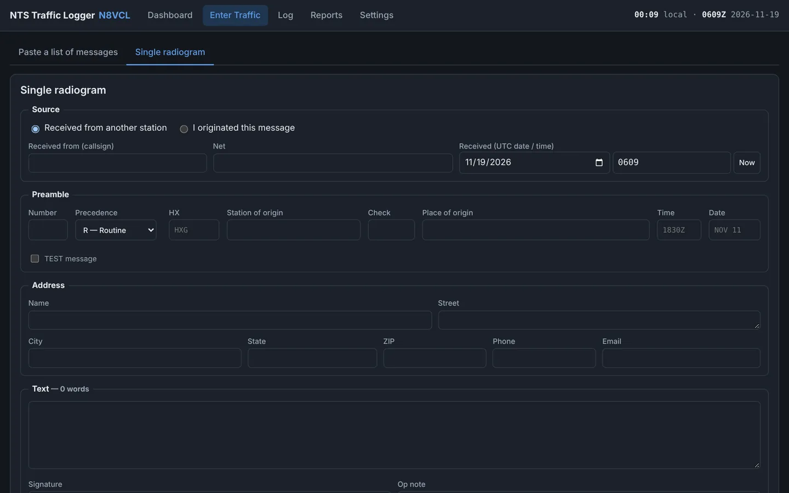
The single radiogram form.
08The Log
Every message is listed with the newest activity first, showing where it came in from and where it went. Filter by status (relayed, delivered, undeliverable, waiting) or by date range, or search for a callsign, name, city, net or a word in the text. Click a message to view, copy, edit or delete it, or to Return to waiting if it was logged by mistake. Export CSV saves the filtered list.
The Log showing everything, including two relays and a delivery.
09Reports
Choose a period: today, yesterday, this week, this month, last month, this year, all time, or custom dates. The report shows:
Received, Relayed (sent), Delivered, Originated and Total handled, counted the same way as the ARRL Station Activity Report, plus Undeliverable;
how close you are to the BPL (500 total, or 100 originated + delivered);
received and relayed counts by net and by station, deliveries by method, traffic by precedence, and a by-day table.
Copy summary puts a short text report on the clipboard for posting. Export CSV saves every event in the period.
Settings → Backup & Restore: Save backup… writes everything to a .json file, and Restore from backup… loads one back. Make a backup now and then, and before moving to a new computer.
Automatic Snapshots: a copy from before each day's changes, for the last 7 days that changed. A restore can be undone with Before the last restore. If the traffic file is ever damaged, the newest snapshot is restored at startup.
Open Data Folder shows where your traffic is kept. It stays put when the app is updated or reinstalled.
Updates: the app checks at startup. Install Update downloads the new version, verifies its signature, installs it and restarts the app. What's New shows the changes, and Later waits until the next start. Check for Updates is at the top right of Settings.